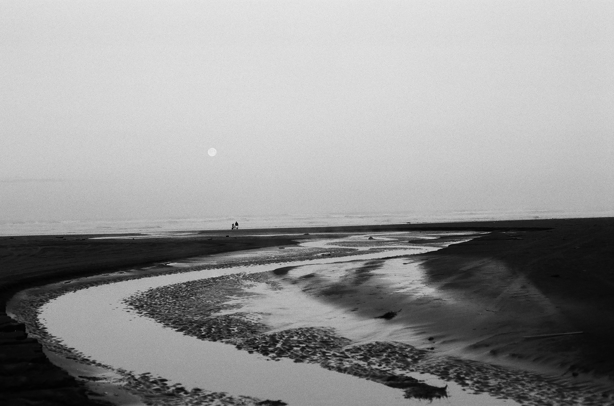

Pictures of Success
« Contents
« Prev Next »
Driving to Hawaii
This title is stolen from a song by Summer Salt of the same name. I strongly associate
photogrpahy and music. I practically can hear it when I take photos.
Eventually I may have
some color shots to add to these but for now this
is all black and white taken with Ilford FP4 plus film. These are from a short trip I took to Long Beach, WA.
I really like it there partially because it reminds me of where I grew up
in NJ. I also just love any coast in general, because they're edge places. You can see where
two worlds meet and there's so much to take in visually.